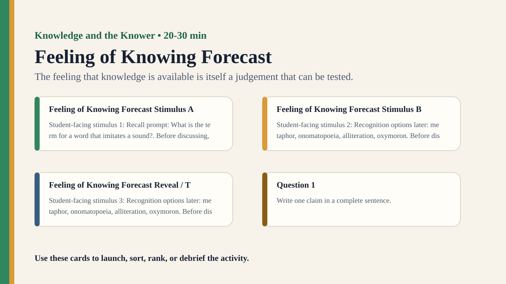

Detailed activity
Feeling of Knowing Forecast
Students predict which forgotten answers they would recognize later, then test the reliability of that feeling.
Free classroom activity
Big Idea
The feeling that knowledge is available is itself a judgement that can be tested.
Teacher Summary
Students distinguish knowing, remembering, recognizing, and feeling that they almost know.
Use metacognition to connect personal knowledge claims with evidence about one's own reliability.
Materials
- Ten recall questions, matching recognition options, and a forecast table.
- Timer and answer key.
Ready to run
Classroom Resource Pack
Use the printable pack for concrete stimulus cards, a student recording sheet, teacher prompts, and a visual prompt image.
Visual Prompt

Student Prompt
Inspect the Feeling of Knowing Forecast stimulus. Record one first claim, the evidence you used, your confidence, and what would make you revise.
Actual Lesson Questions
| # | Question for students | Teacher cue |
|---|---|---|
| 1 | Write one claim in a complete sentence. | Teacher cue: look for a clear claim, not just a description. |
| 2 | List two pieces of evidence. | Teacher cue: students should name visible words, data, source features, method features, or contextual clues. |
| 3 | Separate observation from interpretation. | Teacher cue: this is where assumptions, framing, models, or perspective usually appear. |
| 4 | Circle one confidence level and justify it. | Teacher cue: confidence is data for the debrief, not a grade. |
| 5 | Name one piece of missing information. | Teacher cue: push for method, source, context, comparison, or definitions. |
| 6 | Answer using the activity as evidence. | Teacher cue: students should move from the classroom example to a general TOK issue. |
Concrete Stimulus Packet
Stimulus
Classroom Observation Scene
A blue notebook sits beside a cracked phone screen. The board says “Evidence ≠ Certainty”. The clock reads 10:42. A red water bottle is half hidden behind a laptop. After 20 seconds, students write what they saw without looking back.
Use this when you need a concrete perception, memory, or confidence stimulus.Stimulus
Feeling of Knowing Forecast Example
Recall prompt: What is the term for a word that imitates a sound?
Use this as the activity-specific version of the stimulus.Stimulus
Comparison / Twist Card
Recognition options later: metaphor, onomatopoeia, alliteration, oxymoron.
Reveal after students commit to their first judgement.Teacher Key / Reveal
The key move is not the “right answer”; it is the moment students see how the feeling that knowledge is available is itself a judgement that can be tested.
Setup Notes
- Use questions students might plausibly know but may not immediately retrieve.
- Make students forecast recognition before seeing options so the metacognitive judgement is visible.
Ready-to-Use Examples
- Recall prompt: What is the term for a word that imitates a sound?
- Recognition options later: metaphor, onomatopoeia, alliteration, oxymoron.
Run Resources
- Forecast table with columns: no recall, feeling-of-knowing rating, recognition answer, outcome.
- Class tally comparing high forecast items and actual recognition success.
Procedure
- Ask students to answer short recall questions without options.
- For unanswered items, students rate whether they would recognize the answer later.
- Give multiple-choice options for those same items.
- Students compare feeling-of-knowing forecasts with recognition accuracy.
- Discuss whether introspection is evidence and when it needs checking.
Teacher Language
- A feeling of knowing is useful data, but it is not the same as knowing.
- What kind of evidence could confirm or challenge your feeling of familiarity?
TOK Debrief Questions
- Knowledge question: How reliable is introspection as evidence about what we know?
- What is the difference between not knowing and not retrieving?
- When should a knower trust a feeling of familiarity?
Knowledge Questions
- How reliable is introspection as evidence about what we know?
- Does feeling familiar make a claim more justified?
- How can knowers test their own reliability?
Sample Student Output
- I was sure I would recognize the answer, but all the options felt familiar.
- My forecast was strongest when I could remember the topic area, not just the feeling.
Exhibition Object Idea
A forecast table comparing feeling-of-knowing ratings with recognition results.
Adaptations
- Support: use fewer questions and simple recognition options.
- Challenge: separate feeling-of-knowing, confidence, and source memory ratings.
Extension Tasks
- Students compare feeling-of-knowing with confidence calibration data.
- Ask students to create a revision strategy based on metacognitive evidence.
Teacher Notes
Keep questions low-stakes and varied so students focus on metacognition rather than score.
Use the recognition phase to show that self-knowledge can be useful but still fallible.